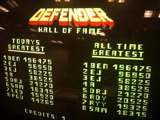

User Search Engine
Search engines are used worldwide for searching everything you need. User search engine allows you to look up any user in the gaming world on any platform so you can check up on all your friends and users.

Online Leaderboards
The gaming world has many different leaderboards and rankings on many different games, game modes, and systems. Online leaderboards combines all the rankings and scores all the gamers on a multi-platform level.
Streaming and Social Networking
Ever console doesn't allow you to communicate to other users on different consoles. With the streaming and social networking you will be able to watch and interact with players all over the world on one platform.
Identity Protection
Keeping all informtion accessible on one platform allows users to be able to tell if a user is the correct person not someone trying to impersonate another user.
Time-Efficient
This allows you to locate a player in no time. Having all user's information on one platform cuts down the time it takes to search multiple different consoles to find the user you are looking for.
Convenience
As the search ranking for ranks and communicating with other users can be difficult. You will no longer need to install multiple applications to see ranks and communicate with other users.